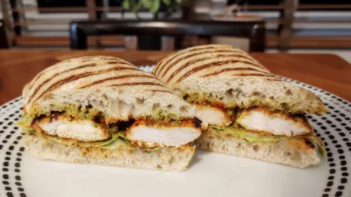

Peruvian-style grilled-chicken sandwiches with spicy green sauce
40 mins
Serves 4
Peruvian

Ingredients
For the chicken:
3medium cloves garlic, roughly chopped
4tsp kosher salt
2tbsp ground cumin
2tbsp paprika
1tsp freshly ground black pepper
2tbsp white vinegar
2tbsp vegetable or canola oil
4
boneless, skinless chicken breasts, cut into 8 cutlets
For the sauce
3
whole jalapeno chilies, roughly chopped
1tbsp aji amarillo pepper paste (optional)
1cup fresh coriander leaves
2medium cloves garlic
½cup mayonnaise
¼cup sour cream
2tsp fresh juice from 1 lime
1tsp distilled white vinegar
¼cup extra-virgin olive oil
Kosher salt and freshly ground black pepper
To serve
4
sturdy buns, such as telera or ciabatta
2
ripe avocados, halved, pitted, and flesh scooped
Thinly sliced red onion
Crisp lettuce leaves, such as romaine
Instructions
For the Chicken: In a large mortar and pestle , pound garlic and salt until a smooth, sticky paste forms. Add cumin, paprika, black pepper, and vinegar and grind them together to form a paste. Drizzle in vegetable oil while grinding. Transfer chicken and marinade to a large bowl and massage with your hands until all the chicken is coated in the marinade. Set aside at room temperature while you make the sauce, or cover and place in the fridge up to overnight.
For the Sauce: Combine jalapenos, aji amarillo (if using), coriander, garlic, mayonnaise, sour cream, lime juice, and vinegar in the jar of a blender. Blend on high speed, scraping down as necessary, until smooth. With blender running, slowly drizzle in olive oil. Season to taste with salt and pepper. Sauce will be quite loose at this point, but will thicken as it sits. Transfer to a sealed container and refrigerate until ready to use.
Place chicken directly over the hot side of the grill, cover, and cook, rotating the pieces occasionally (but not flipping them), until the chicken is almost completely cooked through and only a few pink spots remain on the top side, about 4 minutes
. Flip chicken and cook on second side until just done, about 30 seconds
. Transfer to a large plate.
To Assemble: Place buns cut side down over the hot side of the grill and cook, moving and rotating them occasionally, until well toasted and starting to char, about 1 minute
. Transfer to a large cutting board. Use a fork to mash half an avocado on each bottom bun. Sprinkle with a little salt. Top with red onions, lettuce, and 2 pieces of chicken each. Spread top buns with sauce and close sandwiches. Serve immediately, with any extra green sauce on the side.